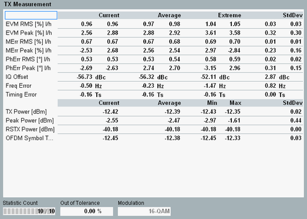
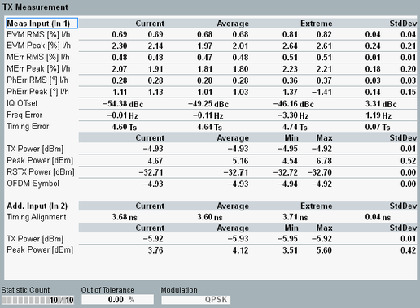

This view provides an overview of statistical measurement results. Other detailed views provide a subset of these values.

For the scenario "Two RF In", the view shows two sections. The upper section "Meas Input" displays results for the configured "Measure Input". These results are the same as for standalone measurements. The lower section "Add. Input" displays the timing alignment of the two inputs and power results for the additional input. The brackets indicate which input is the measured input and which is the additional input.

The table lists "Current" values derived from the last measured subframe. The other columns provide a statistical evaluation for the statistic count or for the entire measurement duration, see also "Tables".
- EVM, magnitude error, phase error:
The results are measured per PDSCH OFDM symbol. From these results per OFDM symbol, the RMS average is calculated and displayed as RMS result.
The peak value of all samples within the subframe is also calculated and displayed as "Peak" result.
The two values (l/h) are calculated for low and high EVM window position; see "Calculation of Modulation Results". - I/Q origin offset: power measured at the carrier center frequency
- Carrier frequency error: offset between the measured carrier frequency and the nominal RF frequency of the measured radio channel
- Timing error: Difference between the actual timing and the expected timing. The timing error measurement requires an "external" trigger signal to derive the expected timing.
The unit Ts stands for the basic LTE time unit, see "Resources in Time and Frequency Domain". - TX power: RMS averaged power over all samples in the subframe
- Peak power: peak power of all samples in the subframe
- RSTX power: average of all reference symbol powers in the subframe, called RSTP in 3GPP TS 36.141, annex F.3.3
- OFDM symbol TX power: power of the 4th OFDM symbol in the subframe, called OSTP in 3GPP TS 36.141, annex F.3.3
- Timing alignment: time offset of the additional input relative to the measured input (positive value means additional input later than measured input)
For additional information, refer to "Common View Elements".